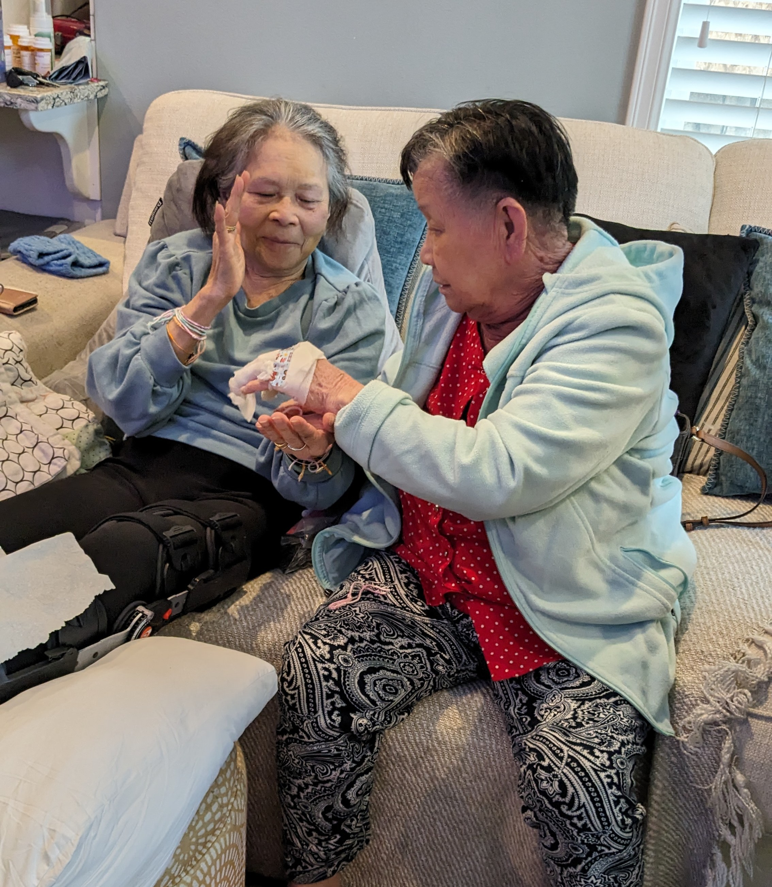
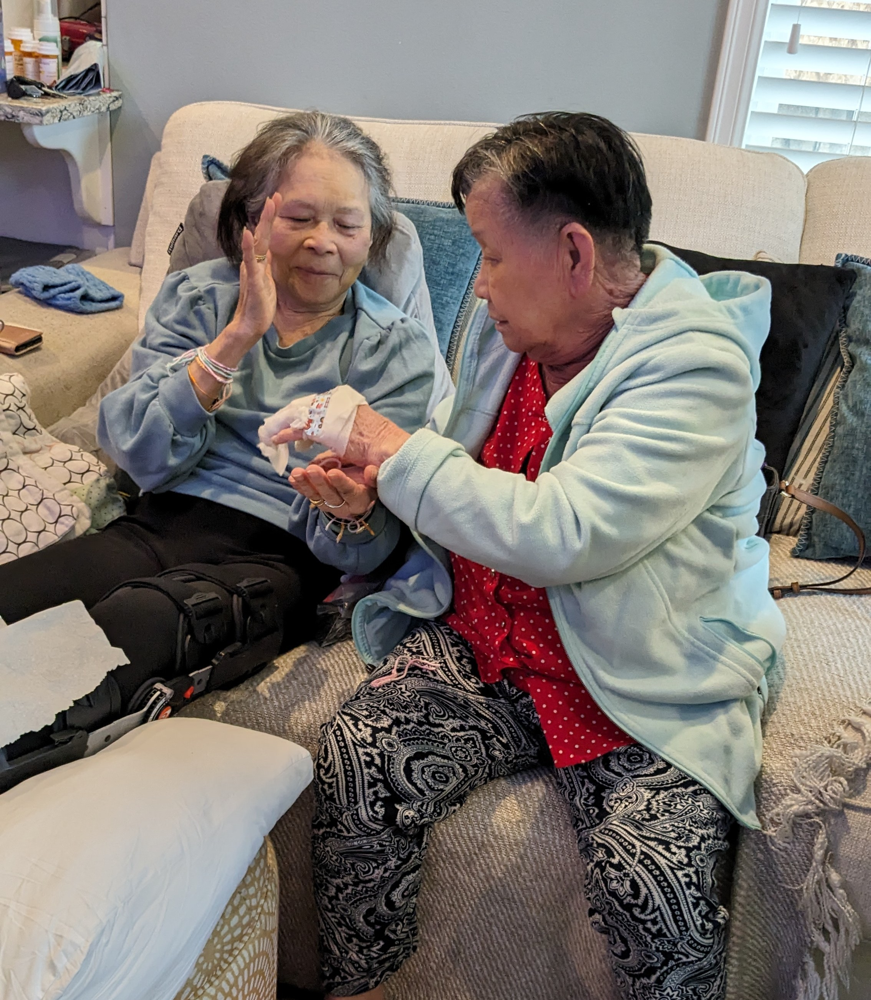
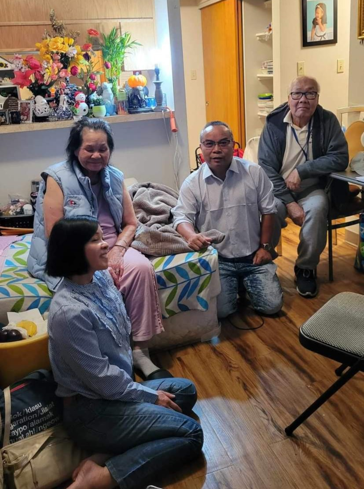
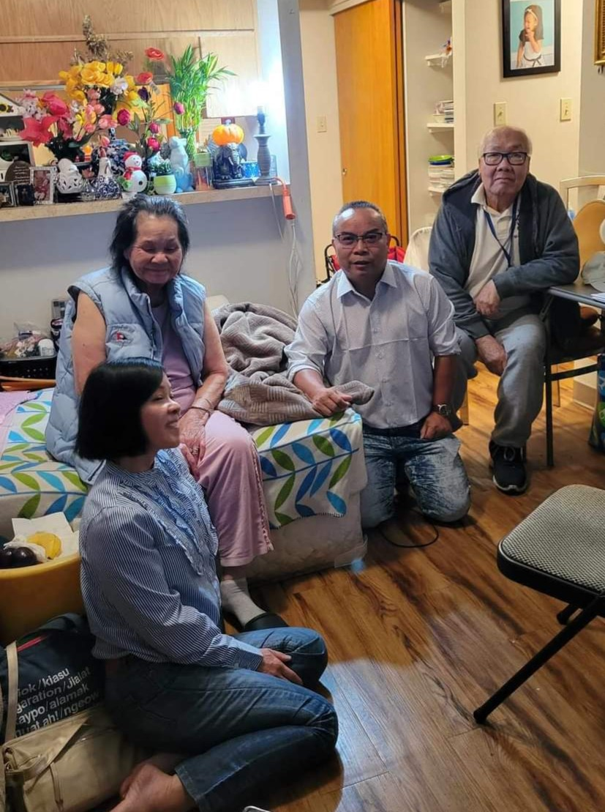
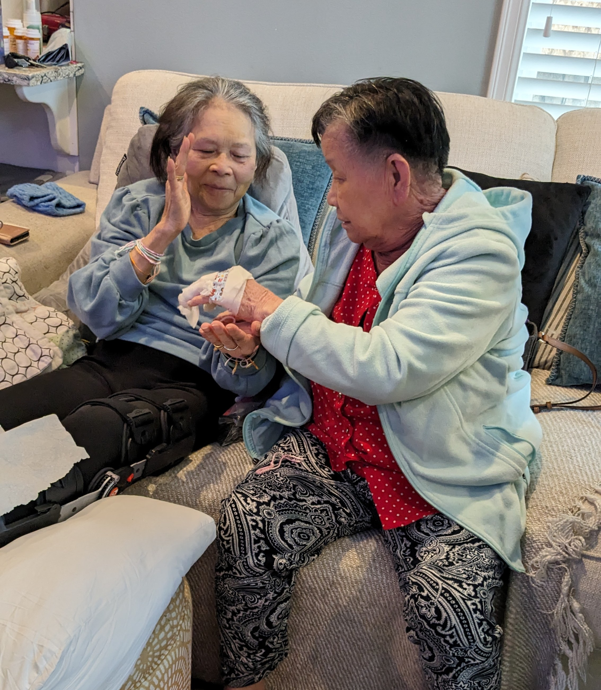
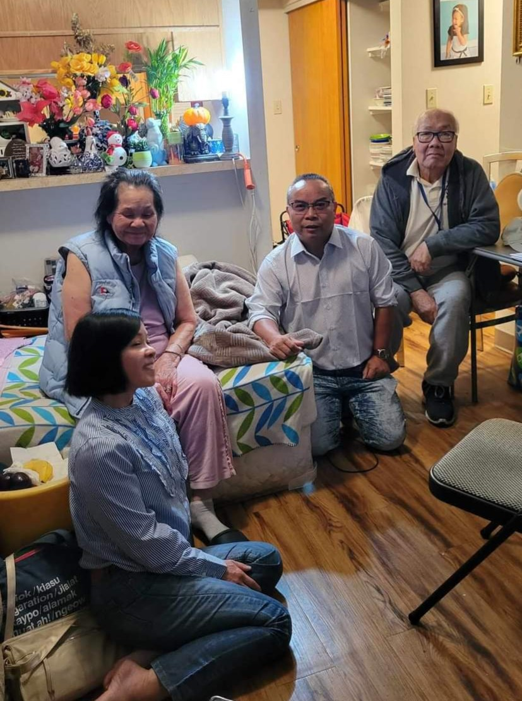
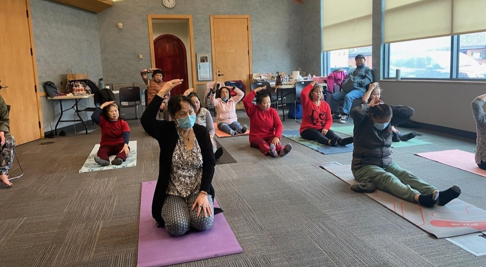
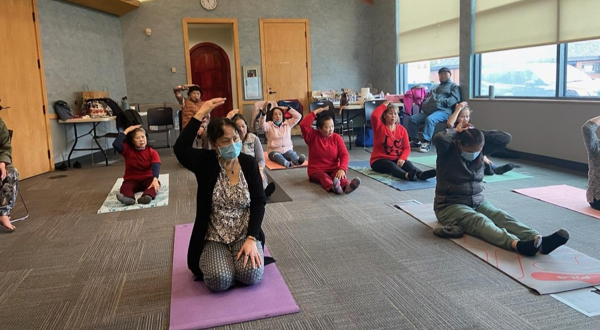
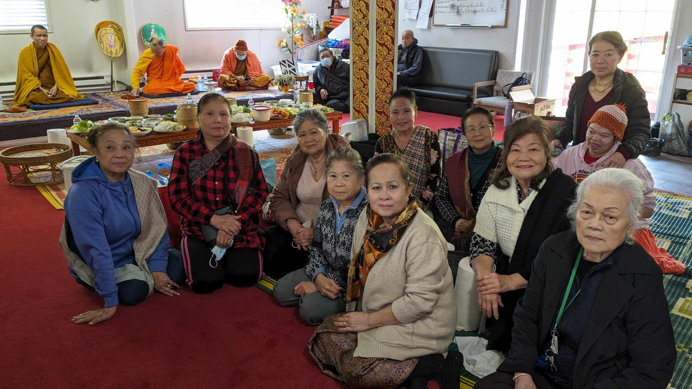
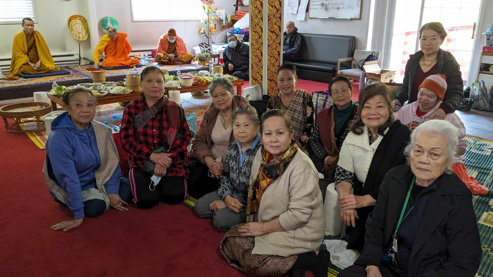

.jpg) 

Our seniors are our life, our wisdom, our community
Empowering Aging with Care and Compassion, Embracing Generations in Celebrating Heritage, and Enriching Lives
Boon Kun Paw Mae
We offer language-specific, culturally familiar programs & services to older adults that can help them learn to manage & delay the onset of chronic disease while experiencing measurable improvements in their physical, social, spiritual, emotional, mental, & economic well-being.
Allow LSO teams to evaluate possible problems in the living environment of homebound older adults. Why? Many seniors live in solidarity. Home visits help seniors ward off feelings of stress, social isolation, and depression while allowing opportunity to assess their physical and mental health status, provide professional support and/or make referrals to specialist care if needed.


Promote the health and well-being of seniors by organizing group outings to provide physical activity, mental stimulation, and social interactions crucial to optimal health in older adults.
Why?
Inactivity in seniors can contribute to cancer, diabetes, osteoporosis, depression, hypertension, and premature death.
.jpg) 

Provide meaningful engagement for seniors to express themselves culturally and honor their history and traditions.
Why?
This helps to show that their cultural values are important, in turn raising self-confidence, and improving connectedness while providing a sense of belonging.

.jpg)
.jpg) 

Lao Senior Outreach was created during the darkest days of the pandemic, even as our elders were experiencing death and hospitalization at a rate far higher than the general public. To this day, our seniors continue to struggle with depression, grief, and trauma due to these crushing losses, which only shows how critical and vital our work is. We know that if given the opportunity, in partnership with the Snoqualmie Tribe Donation, we can dive deeper into addressing this need.
In addition to providing a lifeline of support for our seniors, Lao Community Outreach also strives to preserve the stories and cultural traditions of our seniors, many of whom are quite elderly. As a Lao community we have been living in the United States since the late 70’s, with the influx of the early 80’s as new arrival refugees from Southeast Asia, Laos. Here are why these stories are so important:· After the fall of Vietnam in 1975, many Laotians fled the country risking their livesacross the Mekong River. Many lost their loved ones while crossing the river and families separated while fleeing.